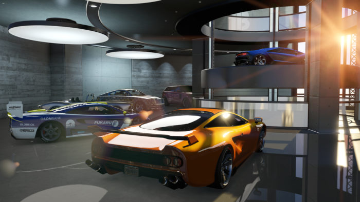

Garagens
Garagens independentes são as propriedades compráveis mais básicas disponíveis no GTA Online. As garagens oferecem a capacidade de armazenar Veículos Pessoais, mantendo-os protegidos do campo de batalha do Modo Livre e mantendo suas personalizações.
Eles também atuam como um esconderijo com funcionalidade limitada: ao contrário Apartamentos, não há como dormir, comer, guarda-roupa ou tomar banho, mas as garagens mais caras terão acesso a rádio e TV.
Metodo de Obter:
As garagens podem ser adquiridas através do Dynasty8realestate.com site, ou interagindo diretamente com a placa "À venda" fora de uma propriedade. As garagens também entram três níveis: Low-End, Medium e High-End, cada um apresentando um respectivo estilo interior.Os Valores variam de R$ 25.000 - 150.000
Garagens de Baixo Custo
- 2 Veiculos; 1 Bicicleta
- Custo: $ 25.000 - 35.000
Garagens Médias
- 6 Veiculos; 2 Bicicletas
- Custo: $ 62.500 - 80.000
Garagens de Alto Padrão
- 10 Veiculos; 3 Bicicletas
- Custo: $105.000 a $ 150.000
Assista a este guia para saber mais sobre. Este vídeo explica como funciona o esquema e como gerenciar.
l